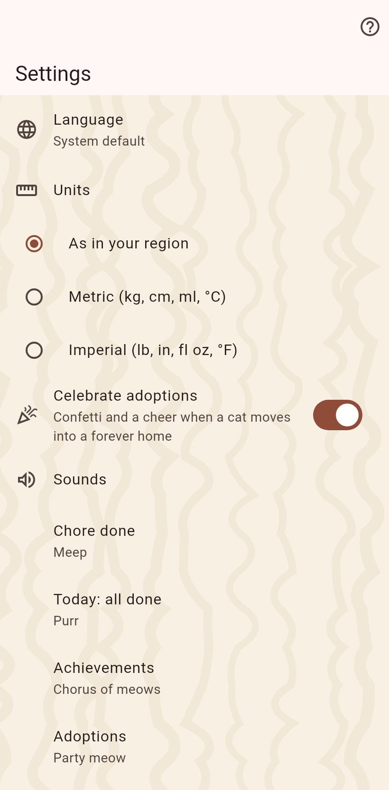

The app's own choices, shared by every catalog: language, units, celebrations and sounds, the coat behind the pages, notifications, and where the catalogs are backed up. The tours can be replayed from here.

A catalog is a world of its own. The catalogs page lists every one on this device; a tap switches to it, the plus makes a new one, the gear opens its settings: name, cats or pets, fields, authors and bans, archive, go back, "move in from another catalog", delete. Deleting writes the catalog to a file first.
The code partners see next to your name; it stays with the catalog it belongs to.